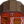

Pig
| Pig | |

| |
| These pigs are trained to find truffles! Lives in the barn. | |
| Information | |
| Building |  Deluxe Barn |
| Purchase Price | |
| Produce | |
The Pig is an animal that lives in a Deluxe Barn. Pigs can be purchased at Marnie's Ranch for  16,000g. Pigs can become pregnant and give birth.
16,000g. Pigs can become pregnant and give birth.
Produce
- Main article: Animals#Produce
Pigs who eat every day mature after 10 nights have passed. A mature and fed pig produces Truffles every day, if the conditions are met.
A Truffle, which sells for  625g, can be placed in an Oil Maker to produce Truffle Oil, which sells for
625g, can be placed in an Oil Maker to produce Truffle Oil, which sells for  1,065g.
1,065g.
| Image | Name | Description | Sell Price | ||||||||
|---|---|---|---|---|---|---|---|---|---|---|---|
| Truffle | A gourmet type of mushroom with a unique taste. |
|
Pigs work differently than other barn animals. Instead of generating a product inside of the barn, they dig up truffles outside of the barn and leave them on the ground.
Location
- Pigs have a chance to dig up a truffle on every farm on a day that they are left outside (more info below). This means that each day, the location of any generated truffles will be random, based on where the pig has walked. It is not necessary to stay on the farm for pigs to produce truffles.
- It may be beneficial to stay on the farm in the morning until multiple pigs have had a chance to spread out from each other, to increase the range of available tiles for each pig.
- Optionally, fences or other obstacles can be used to constrain the movement of pigs coming out of the barn. This can be useful in that it concentrates the area where they can produce truffles.
- Importantly, truffles cannot be produced on tiles that contain debris or other objects (not including crafted flooring or pathing). Thus, to guarantee that a pig produces a truffle, ensure that it is travelling over mostly uncovered tiles during its daytime walk.
- Note that while the truffle appears in front of the pig, the tile checked for debris is where the pig stands. If the tile in front of the pig is occupied (e.g., by a fence) the truffle is instead placed one tile further. If that tile is occupied, the truffle is placed one tile further, and so on. This can lead to truffles being spawned outside of a fenced area.
Prerequisites for Truffle Generation
A pig will produce a truffle only if all of the following are true:
- the pig has been fed
- the pig has been let outside the barn
- it is not raining/storming
- it is not winter
- there are tiles available outside upon which to place a truffle
Chance to Produce the First Truffle
A pig has a 0.02% chance on each frame to generate a truffle if:
- it has not yet generated a truffle for the day
- it is standing on a free tile
This means that there is around a 99.99% chance that a pig will generate a truffle each day, with the assumption that it is walking around on mostly free tiles. Friendship does not affect this check; a pig with 0 friendship will still have a 99.99% chance to generate one truffle per day.
Chance to Produce Extra Truffles
- Once a pig has found the first truffle for the day, it can continue to find truffles.
- The chance to find an extra truffle is
Animal Friendship / 1500. This means that at max friendship (1000), there is a 66% chance of creating an extra truffle. - Multiple extra truffles can be made until the animal fails this check.
- The average number of truffles a pig at max happiness produces in a day is ≈3 [1].
Professions
- Truffles benefit from professions such as Gatherer, allowing for double harvest, as well as Botanist, making all Truffles iridium quality.
- However, Truffles do not benefit from the Rancher profession.
Gathering Frequency
- Truffles that are not gathered will stay on the ground until the next day. This means that a player can continually let Truffles build up, and then collect them all at once.
- However, truffles that are not gathered on the 28th day of a season disappear on the following morning (the 1st day of the new season).
Reproduction
Pigs, like cows, sheep, and goats, have a low chance to reproduce and can produce baby pigs. This is true even if Marnie refers to the pig with male pronouns at the time of purchase. The more animals there are inside the same barn, the higher the chance an animal will give birth. There is no indication that a pig is pregnant except the morning after the baby pig has been born. The player will receive a notice at the bottom of the screen before the day starts, stating "During the night, [parent's name] gave birth to a baby pig."
Selling
Pigs can be sold. The selling price is dependent on how many hearts the animal has ( 20,800g max).
20,800g max).
To sell a coop or barn animal, right-click the animal after petting. The friendship/mood interface appears. Move the cursor over the gold coin button at the right to see how much you can sell the animal for. Click that button and the confirmation that follows to complete the sale.
Notes
This page or section contains unmarked spoilers from update 1.6 of Stardew Valley. Players may want to avoid or be cautious toward reading this article/section. |
- Pigs have a 0.2% chance to dig up a Truffle Crab instead of a Truffle.[2]
Trivia
References
- ↑ See the infinite geometric series calculation on the talk page.
- ↑ See FarmAnimal::DigUpProduce in the game code.
- ↑ The gender of animals is set by FarmAnimal::isMale in the game code. The only effect in-game is the pronoun used in some dialogs (e.g., when Marnie says she'll "send little [Name] to his/her new home"). See PurchaseAnimalsMenu::marnieAnimalPurchaseMessage and FarmAnimal::getMoodMessage.
History
- 1.0: Introduced.
- 1.2.26: Fixed bug where they wouldn't produce goods at high happiness.
- 1.5: Crafted flooring/paths no longer prevent pigs from producing truffles.
- 1.6: Can now rarely dig up Truffle Crabs.
| Animals and Produce | |
|---|---|
| Coop | Chicken (Egg • Large Egg • Brown Egg • Large Brown Egg) • Dinosaur (Dinosaur Egg) • Duck (Duck Egg • Duck Feather) • Golden Chicken (Golden Egg) • Rabbit (Wool • Rabbit's Foot) • Void Chicken (Void Egg) |
| Barn | Cow (Milk • Large Milk) • Goat (Goat Milk • Large Goat Milk) • Sheep (Wool) • Ostrich (Ostrich Egg) • Pig (Truffle) |
| Fish Pond | Fish (Roe) |
| Slime Hutch | Slimes (Slime • Slime Ball • Slime Egg) |
| Other | Cat • Dog • Horse • Turtle |